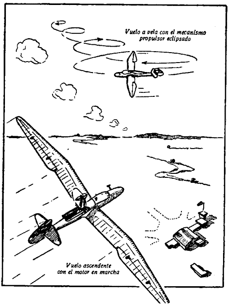
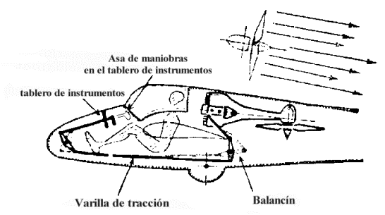
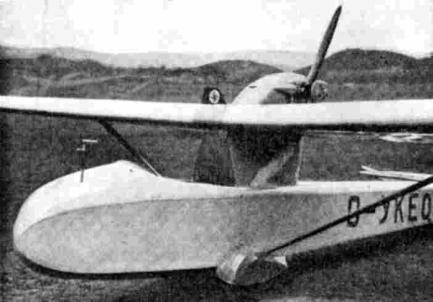
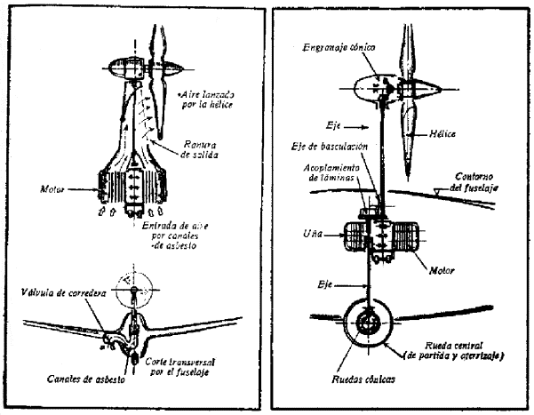
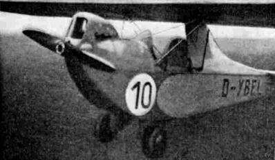

|
Inicio
Bibliografía
Noticias
Hangar
Actividades
Cursos
Comisión
Fotos
Videos
Ubicación
Contáctenos
Links
|
|
Manual del Vuelo a Vela
Wolf Hirth - 1942
El vuelo
por Heinz Kensche
Motoplaneadores - Motoveleros
por WOLF HIRTH
Alrededor
del año 1933 se oía expresarse así en los centros de reunión de especialistas :
« Ahora sí que puede decirse que ha llegado a su fin el
progreso de los veleros; ya no habrá novedades ni grandes sorpresas.»
Y la realidad, en los tiempos que siguieron a aquellos,
demostró lo contrario ; los años 1934 y 1935 trajeron, con el viento térmico, marcas de
distancia que nunca pudieron ser sospechadas ; de los 270 km. se pasó a los 300, 500,
hasta los 600 km. El vuelo de duración, en monoplaza, fue llevado de las 20 a las 40
horas; la altura, de los 2500 m. a más de 8000 m.
En 1936 se celebró el concurso de vuelta al sur de
Alemania, que fue un gran éxito: los Alpes fueron dominados varias veces y el concurso
del Rhön de 1937 estuvo, casi todo, compuesto de vuelos con objetivo fijado. Cómo se
habrían reído los especialistas si se hubiese pronosticado ante ellos, en 1930, que, en
un solo día, veinte veleros en números redondos iban a aterrizar en el aeródromo de
Nuremberg, partiendo de la Wasserkuppe !
Ciertamente que nuestros aparatos no han llegado, por
saltos, a su estado actual de progreso. La mayor parte de los vuelos de marca de nuestros
tiempos habrían sido también posibles con los buenos aparatos de 1928 -1930. Los
problemas en este aspecto son hoy los siguientes : mejorar aún algo las características;
afinar todavía un poco las propiedades de vuelo; hacer la fabricación aún un poco más
económica. Pero nuestra finalidad es, desde 1920, no solamente llevar el vuelo sin motor
al mayor grado de perfección, sino mucho más generalmente, hacer del vuelo un deporte
popular.
El vuelo de distancia sin motor es algo único en belleza,
sobre lo cual hay coincidencia perfecta entre todos los que lo han practicado. También
podría yo hacer constar aquí, de antemano, que ese vuelo tal como se practica hoy no le
echaría de menos y, sin embargo, en concepto de obra maestra del vuelo a vela es
susceptible de admitir un perfeccionamiento.
Después de muchas horas de estar con felicidad
manteniéndose en el aire, aterriza uno en cualquier parte y está uno con su cacharro en
medio del campo o en un aeródromo, esperando, hasta que dé la casualidad de que alguien
vaya a buscarle. Esto es cosa bastante rápida y sin tropiezos con los sirvientes
ejercitados, encargados de ello en un concurso.
Debe uno, pues, esperar tranquilo, porque también en el
« Servicio de tierra » hay valores indiscutibles. Pero ¿ cómo va la cosa en un
sencillo vuelo de entrenamiento, en un vuelo « de placer » de uno solo ? Si se piensa en
la serie de dificultades que supone un vuelo de 200 km. en camión, remolque, hombres que
ayudan, teléfono y demás, entonces se queda uno algo desconcertado.
Como mejor se aprende a conocer las « circunstancias »
es cuando son dos los que van de viaje: uno en el aparato remolcador y el otro en el
velero; entonces, después del aterrizaje y antes de despegar, se tiene trabajo para una o
dos horas, hasta que se ha recogido el cable de remolque, se encuentra quien ayude a
llevar el velero al hangar o, si es para despegar, hasta el otro lado del aeródromo;
llenar todas las formalidades de la policía aérea, la oficina meteorológica, las
autoridades del aeropuerto, tomar gasolina, así como, si es en el extranjero, la aduana y
visado de pasaportes.
No quiero añadir aquí, punto por punto, todas las
reflexiones que llevan siempre, por cualquier camino - brevemente - ¡ al motovelero !
Tenemos ya, sin embargo, el bello paralelo en el deporte
del velero marítimo. Si no se trata de una regata, se instala uno en su bote de vela un
pequeño motor, que lleva nuestra embarcación fuera del puerto y la deja allí para
entretenerse jugando con el viento y, cuando, al anochecer, el viento cae nos trae otra
vez a casa. Lo mismo, y no otra cosa, es lo que quiere conseguir con el motovelero, el
gremio de pilotos de vuelo a vela.
Ahora que, la verdad, el problema es aquí mucho más
difícil. En el bote de vela el peso y la resistencia al avance desempeñan papel tan
importante como en el velero; además, el bote flota, aunque ofrezca gran resistencia a
moverse. El avión, en cambio, sólo puede mantenerse bien en el aire si su « resistencia
perjudicial » es lo más pequeña posible, tan pequeña como ha llegado a ser en nuestros
veleros de concurso.

Fig. 68. El motovelero
¿ es el último término de la evolución de los veleros ?
El
peso desempeña, en el caso del bote, papel de muy poca importancia, aunque claro es que
no puede esperarse de él obsequio alguno. El motovelero, representando el final de la evolución
de los aparatos de vuelo a vela, debe presentarse ante los pilotos de velero del modo
siguiente (fig. 68):
A primera vista, como velero de concurso normal, pero
provisto de una rueda o mejor, con verdadero, aunque pequeño, tren de aterrizaje que sea
abatible.
La razón de esta disposición está en que no siempre es
fácil proporcionarse los ayudantes que pongan el carretoncillo de despegue debajo del
aparato y que, además, no le haga a uno trabajar improbamente para el transporte. Si
sólo se cuenta con una rueda, basta generalmente con un ayudante; con dos ruedas puede uno hacer el rodaje
completamente solo.
Además, el motor debe montarse dentro del fuselaje o del
ala, porque, de este modo, mientras se vuele a vela sin el motor, no se tiene siempre la
resistencia perjudicial que ofrecería sin objeto útil alguno. También, por la misma
razón, deben disponerse los órganos de propulsión, hélice y transmisión, de modo que
puedan ser eclipsables. Acaso, cuando esté resuelto este problema, se pueda trabajar con
pequeñas alas batientes que, en posición de reposo, ofrezcan resistencia despreciable o
nula. Sin embargo, este procedimiento está probablemente mucho más lejano que una
propulsión eclipsable. La condición principal que ha de cumplir el motor no es
la de tener el peso menor posible, ni el mínimo consumo de esencia o ser de larga vida,
sino que, indispensablemente, ha de tener capacidad para que el velero pueda despegar por
sí mismo. El motor es ahora solamente un medio auxiliar: marcha, no durante todo el
vuelo, sino principalmente al despegar y en el vuelo ascensional, hasta engancharse al
térmico. En mil horas de vuelo sólo son necesarias cien horas de marcha del motor, vida
que muy bien puede pedirse a un motor pequeño y barato.

Fig. 69. Mecanismo de
balancín para el órgano propulsor
El consumo
de combustible, por la misma razón, no tiene gran importancia: 10 kg. bastan para un día
de vuelo. El peso tampoco importa mucho, pues un motovelero no tiene por qué ser más
pesado que un velero biplaza, y se ha demostrado, en estos tiempos, que los biplazas no van
muy a la zaga de los veleros de un tripulante, en cuanto a su capacidad de volar a vela.
Sin embargo, lo que irremisiblemente ha de tener el motor es seguridad de arranque, que es
como únicamente puede tener el piloto confianza ciega en él, sabiendo que cuenta con su
ayuda en cuanto la necesite. La descripción de un vuelo con motovelero será el mejor
modo de contestar a las preguntas que aun quedan sin responder, en lugar de hacer prolijas
explicaciones.
Con el auxilio de un ayudante, el piloto saca su aparato
hasta dejarle ante el hangar; todo lo demás lo hace él solo.
Se monta en su cacharro, da a la manivela del arranque de
goma y sale el motor fuera : con esto se abren automáticamente los conductos del aire
para el enfriamiento y el grifo de la gasolina; la bomba del carburador da un chorro; se
cierra el contacto del encendido y en seguida el propulsor se pone con su trinquete en
posición de espera; se suelta automáticamente también el acumulador de fuerza, y el
motor se pone a marchar. Nuestro hombre rueda para despegar, da plenos gases y sube, en
diez o quince minutos, a 600 m. de altura, en donde se engancha a un térmico. Da dos o
tres vueltas todavía con el motor en marcha y, si la ascendencia es suficiente, abate su
tenderete y vuela a vela cinco o seis horas donde le plazca (fig. 69).

Fig. 70. Un velero
motorizado. El «Motobaby» con motor de 18 CV, procedente
de la transformación a motovelero del conocido « Grunau Baby II »
Al abatir
el motopropulsor se cierran otra vez, automáticamente, los conductos de aire y el grifo
de la bencina, e igualmente se interrumpe la corriente del encendido (figuras 71 y 72).
Naturalmente que su tren de aterrizaje lo ha escondido en
seguida de despegar. Mientras vuela a vela, allá arriba, tiene tiempo de sobra para
montar otra vez su acumulador de fuerza (basta tesar un cordón de goma). Entonces ocurre
que la ascendencia se va haciendo cada vez más débil, nuestro motovelero pierde más y
más altura, lo que no hace perder la tranquilidad a su piloto, que, cuando está a 100 m.
del suelo y no ha encontrado nada todavía, hace salir otra vez, en pocos segundos, su
motor fuera del fuselaje, le deja marchar medio minuto para que se caliente y otra vez,
con vuelo mecánico, sube hasta encontrar otra ascendencia. Si, por el contrario, le es
preciso aterrizar, puede hacerlo sobre el patín, en caso de que el terreno le parezca
poco apropiado para el empleo del tren de aterrizaje.
Cada uno puede imaginarse las variantes que quiera, pero
queda sentado que el motovelero no es vehículo para « viajar por el aire » sino para «
moverse en el aire ». No está ideado para aquellas gentes para las que el tiempo es
dinero y el volar solamente un medio para trasladarse rápidamente de un sitio a otro,
sino para aquellas otras que quieren volar mucho y a placer, porque les da gusto volar.
El aparato descrito por mi y representado en croquis es
solamente una proposición. Es completamente posible que para el problema haya soluciones
mejores y más sencillas, por ejemplo : con ayuda de la hélice ranurada ensayada en 1924;
con alas giratorias libres o batientes, etc.
Francamente, la construcción de tal motovelero no será
económica, pero su uso si lo será y mucho.
Además, de este «motovelero propio», que hoy, 1938, no
existe en la práctica, conocemos solamente su precursor, el cual podría llamarle «
seudomotovelero » o «velero motorizado».

Fig. 71. Enfriamiento del motor
Fig.
72. Esquema del mecanismo
propulsor
La
fórmula dice así: se toma un cierto velero de los que existen, que sea bien resistente,
se le monta, donde parezca bien, un motor sostenido por una estaca y se le hace zumbar.
Con este aparato se puede también volar a vela, siempre que la ascendencia sea
suficientemente intensa. Pero esto se puede hacer también con cualquier avión ordinario
de motor, como se hizo ya muchas veces con la «Klemm I, 20» y, sin ir más lejos, un
caso bien extraordinario : el francés Thoret voló hace muchos años (3 enero 1923) con
un biplano de escuela Hanriot, completamente primitivo, llevando el motor parado y estando
en el aire siete horas sobre la ascendencia de una ladera en el oasis de Biskra, vuelo que
fue entonces la marca mundial.
El asunto no es otro que éste: que muchas veces se puede
volar a vela con este aparato y muchas veces con aquel otro.
En cuestión de vuelos de duración, podría afirmar, en
pocas palabras, lo siguiente: con el motovelero ideal se volaría mil horas por año, pero
con el seudomotovelero, solamente cien horas; esto sencillamente por la circunstancia de
que es mucho más frecuente ¡ que haya ascendencias débiles que fuertes !
Pero todavía hay otra clase del género « débilmente
motorizado ».
Yo suprimiría, en seco, el « pequeño avión » que se
construye típicamente como avión de deporte y que sólo se diferencia de los grandes en
las menores dimensiones de todos sus elementos. No representan ninguna idea nueva ;pueden
ser de construcción barata y hasta económicos en su uso; necesitan poco sitio en los
cobertizos; tienen rodaje largo al despegar y aterrizar, pero casi siempre son de vuelo
difícil y peligroso.
Asimismo es muy conocido el « avión ligero », y hasta
cierto punto se ha acreditado. También nos interesa poco. Tipos conocidos : « Aeronca
», « Grade », « Tipsy », « Erla », « Deicke » y análogos.
Lo que nos atañe es el motoplaneador, el cual, como su
nombre indica, es el primer escalón para el vuelo sin motor, el planeador de escuela;
algo así, en cuestión de parentesco, como el motovelero con relación al velero de
concurso. Las condiciones que pedimos al motoplaneador son: economía en su construcción
y en su empleo; posibilidad de ser reparado fácilmente y buenas y seguras propiedades
de vuelo, es decir, cosas que son fundamentales para emplear un aparato de tal clase en
los pequeños grupos de aficionados locales, o por gentes que, en cuestión de
construcción y de volar un planeador, sepan un poco lo que hagan.
Si se sabe que hay personas que año tras año, por vivir
en una comarca llana, sólo pueden dejarse caer desde una colinilla de topo o, a lo más,
con remolque de torno, para darse el gusto de un vuelo de tres minutos, se comprende que
se debe llegar a un medio que les permita hacer algo más. El conocido procedimiento del
remolque por avión no es barato y, sobre todo, está unido a la condición de tener a su
disposición un aeródromo.
El gran obstáculo para el motoplaneador barato es la
falta del pequeño motor económico que sea adecuado para él. El camino más sencillo de
llegar a ello parece ser el empleo de los motores que existen para las motocicletas; pero,
prescindiendo del peso, los ensayos hechos han demostrado que los motores usados hoy para
las motos no bastan a satisfacer las condiciones exigidas en un avión.
A lo que se añade que el motor de motocicleta es de
muchas revoluciones y, en cambio, el buen rendimiento de la hélice exige que gire
lentamente.
Se necesita, por consiguiente, una transmisión
demultiplicadora, lo que lleva a nuevas dificultades, nuevas causas de avería y más peso
y, por tanto, mayor coste. Además, estos débiles motores deben marchar hasta lo último,
hasta «deslomarse» trabajando y, por lo tanto, su vida no es larga. ¿ Entonces, qué hay que
hacer ?
Desde luego, no se trata aquí tampoco de que el
motoplaneador sea un medio de transporte. Su objeto principal es permitir el paso al
avión de motor, a los que reciben la enseñanza del vuelo planeado y a vela; dar a
aquellos hombres que con remolque a torno han volado tres minutos una posibilidad de
estarse en el aire diez minutos o media hora. No debe ocurrir que nuestros jóvenes se
pasen tranquilamente tres años cuesta arriba para luego irse otra vez hacia abajo ;
quieren también escalar la torre de la iglesia que ven va de cerca. Y bien ; para ello se
construyen su motoplaneador. Pero ¡ nuevas dificultades !
En el blando prado, en el campo para el rodaje, con sus altos árboles al
final, sólo es posible el despegue con tal débil motor a fuerza de mucho trabajo. Apenas
el piloto que está ya muy ejercitado puede conseguir hacer pasar el cacharro sobre los
árboles ; cada vuelo es, en su principio, algo que da ira.
Pero he aquí que leemos constantemente que nuestros
grandes y pesados aviones transoceánicos emplean ahora un medio auxiliar para envolar: ¡
el lanzamiento por catapulta ! ¿ Qué cosa mejor que ésta para emplearla también en
nuestros planeadores de motor ? Tanto más cuanto que, con nuestro aprendizaje de planear,
estamos acostumbrados a un «despegue por catapulta». El medio adecuado es nuestro torno,
que nos lleva, rápida y seguramente, con pequeño recorrido, a 150 ó 200 m. de altura,
sin que sea necesario, para ello, acelerar el motor. Ya arriba, se le suelta y, con las
mismas, se le dan plenos gases, y con el motor ya en marcha, funcionando, se puede volar
sin perder altura. Pero como por aquí anda el diablo, no trata uno de ayudarse con el
timón de profundidad, como dicen los bellos versos del aviador, sino que se cortan
gases y se termina el remolque a torno de la misma manera que ya se ha hecho otras veces.
Este es, a mi modo de ver, el camino más seguro para pasar del vuelo planeado al vuelo
con motor; no sólo el más seguro, sino también el más económico.
De este modo ayudamos a descartar los posibles despegues
defectuosos con nuestros viejos tornos y aumentamos en mucho la vida de nuestro motorcito,
porque raras veces necesitamos ponerle a plenos gases en el vuelo ascendente.

Fig. 73. Motoplaneador
con motor Ilo
Claro es
que siempre podremos hacer, si las ocasiones son favorables, despegues normales para
ejercitamos en ellos, pero siempre que hayamos conseguido ya, por un método seguro, la
necesaria práctica de vuelo.
Para terminar, en toda esta discusión siempre lo primero,
¡ volar a vela ! Con esto no quiero decir que el camino para ser buen aviador sea
solamente el del vuelo a vela. Quien tenga la posibilidad de empezar su aprendizaje en el
avión de motor llegará más pronto a la meta. Pero este asunto pertenece a otro
capítulo y para ello hacen falta otros aparatos, es decir, « verdaderos » aviones de
motor con motores, por lo menos, de 40 a 60 CV.
Una palabra final para quienes sólo estiman el vuelo en
avión con motor y hacen mofa de las discusiones sobre el vuelo a vela y los motoveleros:
« Me dais lástima», porque el más bello episodio en la vida del hombre que vuela es el
primer vuelo a vela hecho correctamente bajo las blancas nubes de un cielo de verano.
|